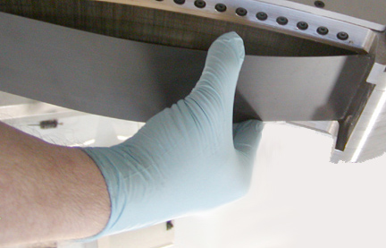

Illustration 4: Suction Cup Example

| NOTE: | A conductive adhesive is used to hold the window in place
that still allows the window to be removed. For the silver window, the adhesive (Al tape) lies on top of the window instead of between the window and collimator,, so window should pull up as tape is removed. If needed, use method for black window (below). For the black window, you will need to use a small thin flat blade screwdriver to start to pull up the window. A suction cup, if available, works very well in this instance (refer to Illustration 4). If using a thin blade screwdriver, it is best to use it around the module 54 area. |
Illustration 4: Suction Cup Example
Illustration 5: Window Removal

Illustration 6: Detector Collimator Plates